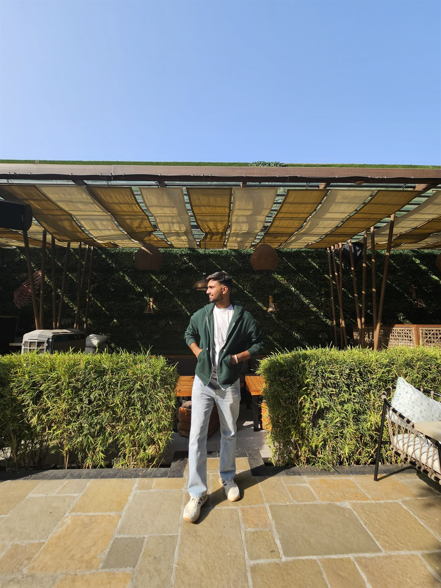

Multi-Armed Bandits
Pick an arm, observe a reward, learn the best choice.
Each pull gives only partial feedback, so the algorithm must learn from experience.
Explore first, regret later. Preferably in a theorem.
Bandits | Online Learning | Optimization | Teaching
Currently: PhD Student in Computer Science and Engineering at IIT Ropar
I work on
I develop theoretically principled and computationally efficient algorithms for learning and decision-making under uncertainty.

About Me
I am a PhD student in Computer Science and Engineering at the Indian Institute of Technology Ropar, supervised by Dr. Shweta Jain. My work focuses on optimization and sequential decision-making, especially multi-armed bandits, dueling bandits, online learning, and nonconvex optimization.
My research goal is to design algorithms that are mathematically reliable, computationally efficient, and useful when feedback is partial, comparative, noisy, or expensive to obtain.
Area of Research
My work studies decision-making systems that must learn from partial feedback: choosing actions, comparing alternatives, and improving policies while uncertainty remains, including continuous and nonconvex action spaces.
Each pull gives only partial feedback, so the algorithm must learn from experience.
Move the control to see the decision policy shift.
Continuous choices can create many local peaks, so the learner needs principled exploration and efficient search.
Two actions are compared; the winner updates the learner's belief about preference.
Bandits sit at the intersection of sequential decisions, preferences, online learning, optimization, and theory.
Publications
Mudit Sharma, Shweta Jain, Vaneet Aggarwal, and Ganesh Ghalme.
Advances in Neural Information Processing Systems (NeurIPS 2026). To appear. CORE Rank: A*.
Satvik Shrivastava et al.
Submitted to the AAAI Conference on Artificial Intelligence (AAAI 2027).
Coursework
Technical Toolkit
My current stack supports algorithm design, theoretical analysis, simulation-heavy evaluation, and clear research communication.
Teaching Assistant Timeline
My teaching assistant work at IIT Ropar has centered on programming, mathematical foundations for AI, and data structures.
Instructors: Dr. Shweta Jain and Dr. Swapnil Dhalmal. Supported implementation, debugging, and complexity-aware problem solving.
Instructors: Dr. Shweta Jain and Dr. Shashi Shekhar Jha. Mentored students in C programming, problem solving, and debugging.
Instructors: Dr. Puneet Kumar and Dr. Shweta Jain. Guided students through mathematical concepts underpinning artificial intelligence.
Collaborators
Research is a shared practice. This section highlights current supervision and coauthored work from my resume.
Advisor and research supervisor, IIT Ropar
Dueling bandits, online learning, and algorithmic analysisPublication coauthor
Lipschitz dueling bandits over continuous action spacesPublication coauthor
Lipschitz dueling bandits over continuous action spacesIndian Institute of Technology Ropar. Home department for my doctoral research in algorithms, optimization, and sequential decision-making.
GTML Lab at IIT Ropar, led by Dr. Shweta Jain, works at the intersection of game theory, machine learning, and real-world decision-making.
Visit GTML LabGallery
The gallery adds a more visual layer to the academic profile: workspace snapshots, travel photos, and moments beyond the desk.
Open GalleryContact
I welcome conversations about bandits, online learning, nonconvex optimization, teaching, and future research collaborations.
Indian Institute of Technology Ropar, Punjab, India
Bandits, online learning, preference feedback, nonconvex optimization, and collaboration ideas.